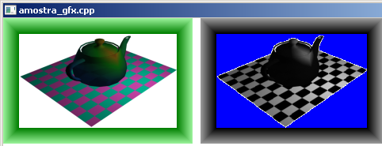

Curso completo de DarkGdk
Gameprog - Escola de programação de jogos digitais
Contato: gameprog.br@gmail.com
Fase 5.5
05.5 Exemplo de aplicação de efeito especial 2D
05.5 Visão geral
Aqui nesse tópico apresentamos um exemplo de efeito especial:
- Carregamos um bitmap e produzimos uma versão modificada dele trocando as
cores originais por tonalidades de cinza;
- trocamos a cor branca pelo azul;
- o tom de cinza é produzido pela média da soma dos valores rgb da cor
original: media = (r + g + b)/3 depois ncor = dbRGB(media, media, media).
Para obter esse efeito seguimos o seguinte caminho:
- Carregamos o bitmap original
- Criamos um bloco de memória com os dados de cor do bitmap original
- Acessamos esse bloco de memória
- Modificamos a cor de cada ponto desse bloco de memória
- Transformamos esse bloco em um novo bitmap
Como sempre veja o programa exemplo:
Exemplo de aplicação de efeito especial 2D

// amostra_gfx.cpp
// Esse programa exemplifica como aplicar efeitos especiais sobre a imagem 2D
#include "DarkGDK.h"
// Protótipo das funções
void initsys(); // inicializa o sistema
void gfx_teste(); // Teste de efeito gráfico
int rgb_efeito(int *pImagem); // Retorna um tom de cinza e muda o branco para azul
// Cores
const int nPreto = 0;
const int nBranco = 0xFFFFFF;
const int nAzul = 255;
// ----------------------------------------------------------------------------
void DarkGDK ( void ) {
// Começo da aplicação DarkGdk
initsys();
gfx_teste();
while ( LoopGDK ( ) ) {
dbSync ( );
} // fim do while
return;
} // fim da função: DarkGDK
// ----------------------------------------------------------------------------
void initsys() {
// Esta função inicializa o sistema
dbSyncOn( ); dbSyncRate (60);
dbCLS(nBranco);
dbSetWindowTitle("amostra_gfx.cpp");
} // fim da função: initsys()
// ----------------------------------------------------------------------------
void gfx_teste(void) {
// Variáveis de trabalho
int naltura, nlargura, ncx;
const int nbmp_fonte = 1;
const int nbmp_tela = 0;
const int nbmp_gfx = 3;
int *pImagem = 0; // Ponteiro para acessar memória com imagem
// Carrega e mostra o bitmap que vai ser manipulado
dbLoadBitmap ("c:\\gameprog\\gdkmedia\\bitmap\\gfx_sample.bmp", nbmp_fonte);
dbCopyBitmap(nbmp_fonte, nbmp_tela);
// Acessa configuração do bitmap
naltura = dbBitmapHeight(nbmp_fonte);
nlargura = dbBitmapWidth(nbmp_fonte);
// Esse comando cria um bloco de memória-bitmap a partir de um bitmap
dbMakeMemblockFromBitmap(1, nbmp_fonte);
// Obtém o endereço do bloco de memória
pImagem = (int *) dbGetMemblockPtr(1);
// Vamos pular o cabeçalho do bloco
pImagem++; // pula primeira posição: largura do bitmap
pImagem++; // pula segunda posição: altura do bitmap
pImagem++; // pula terceira posição: profundidade de cor
// Vamos hackear o bloco de memória-bitmap
for (ncx=0; ncx < ( naltura * nlargura ); ncx++)
{
// Passa a cor do ponto para rgb_efeito() que retorna esse valor alterado
*pImagem = rgb_efeito ( pImagem);
// Avança o ponteiro para a frente
pImagem++;
}
// Esse comando cria um bitmap a partir de bloco de memória-bitmap
dbMakeBitmapFromMemblock(nbmp_gfx,1);
// Vamos mostrar nosso bitmap que sofreu um efeito gráfico
dbCopyBitmap(nbmp_gfx,0,0,nlargura, naltura,
nbmp_tela,nlargura+10,0,nlargura*2, naltura );
// Vamos liberar a memória do sistema
dbDeleteMemblock(1);
dbDeleteBitmap(nbmp_fonte);
dbDeleteBitmap(nbmp_gfx);
} // gfx_teste().fim
// ----------------------------------------------------------------------------
int rgb_efeito(int *pImagem) {
// Varíaveis de trabalho
int soma = 0;
int media = 0;
int ncor, r, g, b;
// Converte um branco para um tom de azul
if (*pImagem == 0xFFFFFF)
{
*pImagem = nAzul;
return *pImagem;
} // endif
// Extrai os valores RGB
r = dbRGBR(*pImagem);
g = dbRGBR(*pImagem);
b = dbRGBR(*pImagem);
// Processa a cor
soma = r + g + b;
media = soma / 3;
ncor = dbRGB(media, media, media);
return ncor;
} // rgb_efeito().fim
Preparação para acessar uma área de memória
int *pImagem = 0; // Ponteiro para acessar memória com imagem
Primeiramente é necessário um ponteiro para números inteiros no qual vamos
receber o endereço de memória do início da imagem.
Criando um bloco de memória-bitmap
dbMakeMemblockFromBitmap(1, nbmp_fonte);
Esta função forma um bloco de memória a partir de um bitmap existente.
Esse bloco de memória é uma réplica do bitmap apontado.
As primeiras 3 posições desse bloco contém a largura, altura e profundidade
de cor do bitmap. Os demais dados são informações de cor na forma de um
número inteiro integral que contém os valores rgb de cada ponto da imagem.
A quantidade de pontos dessa área de dados do bloco é dado pela multiplicação
altura * largura, propriedades básicas da imagem.
No primeiro argumento dessa função você identifica o bloco de memória;
no segundo argumento vai o bitmap fonte para o bloco.
Obtendo o endereço do bloco de memória-bitmap
// Obtém o endereço do bloco de memória
pImagem = (int *) dbGetMemblockPtr(1);
Esta função retorna um ponteiro com o endereço do início do bloco de memória
apontado em seu argumento. Veja que é necessário fazer um type casting no
dado de retorno dessa função: pImagem = (int *) dbGetMemblockPtr(1);
Acessando e modificando os dados do bloco
Como estamos trabalhando com um ponteiro de memória tanto podemos acessar
como modificar facilmente os dados:
int valor = *pImagem; // Acessando
*pImagem = valor; // Modificando.
Explicando a função rgb_efeito()
// ----------------------------------------------------------------------------
int rgb_efeito(int *pImagem) {
// Variáveis de trabalho
int soma = 0; int media = 0; int ncor, r, g, b;
// Converte um branco para um tom de azul
if (*pImagem == 0xFFFFFF) {
*pImagem = nAzul; return *pImagem;
} // endif
// Extrai os valores RGB
r = dbRGBR(*pImagem); g = dbRGBR(*pImagem); b = dbRGBR(*pImagem);
// Processa a cor
soma = r + g + b; media = soma / 3;
ncor = dbRGB(media, media, media);
return ncor;
} // rgb_efeito().fim
Essa função é muito simples e o código fala por si mesmo. Ilustramos
os dois efeitos mais simples de realizar que consistiu em substituir uma
cor por outra quando trocamos o branco (255-255-255) pelo azul (00-00-255).
Outro efeito simples foi acizentar a imagem quando identificamos cada canal
de cor (r,g,b), somamos e aproveitamos a média de seus valores para
reconfigurar os mesmos canais com ela.
Liberando a memória
Não esqueça de deletar os objetos quando não precisar mais deles ou quando
finalizar o seu programa:
// Vamos liberar a memória do sistema
dbDeleteMemblock(1);
dbDeleteBitmap(nbmp_fonte);
dbDeleteBitmap(nbmp_gfx);